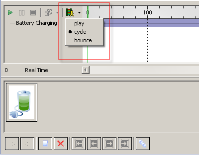

Animation Mode
The modes for playing the animation can be set in the animation editor.
In the Editor,
select a component that can be animated.
Right-click the component and select Edit/Animate
option to open the Animation Editor.
Click on "Set Animation Mode" option and the animation modes are displayed
as shown in the figure.
There are three modes that can be set :
- Play Mode - Plays the animation only once.
- Cycle Mode - Plays the animation continuously.
- Bounce Mode - Plays the animation in forward direction and backward direction alternatively and continuously.

Figure:
Animation Mode
Note:
You can only set animation mode
for those components that can be animated.
Note:
Preview is available only for
Cycle mode. Play and
Bounce modes are not available for preview.